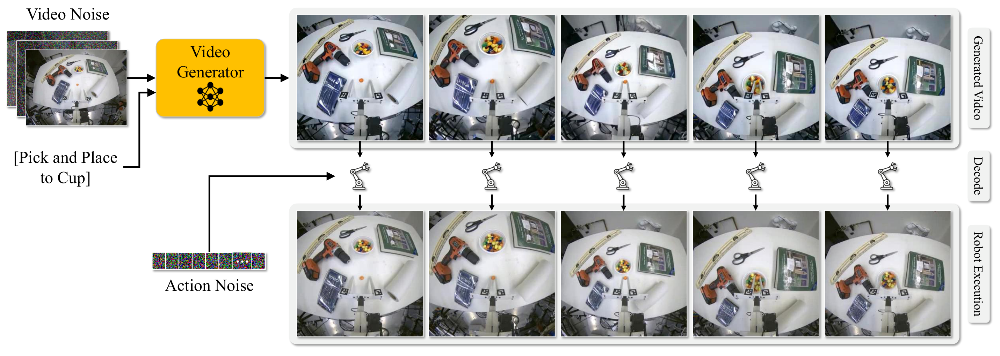
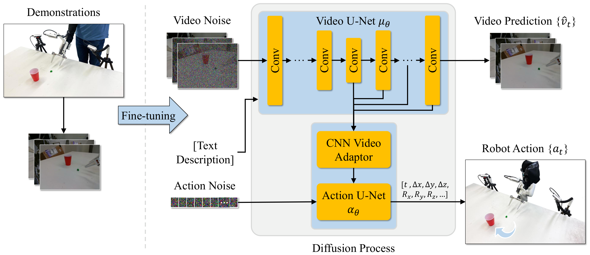
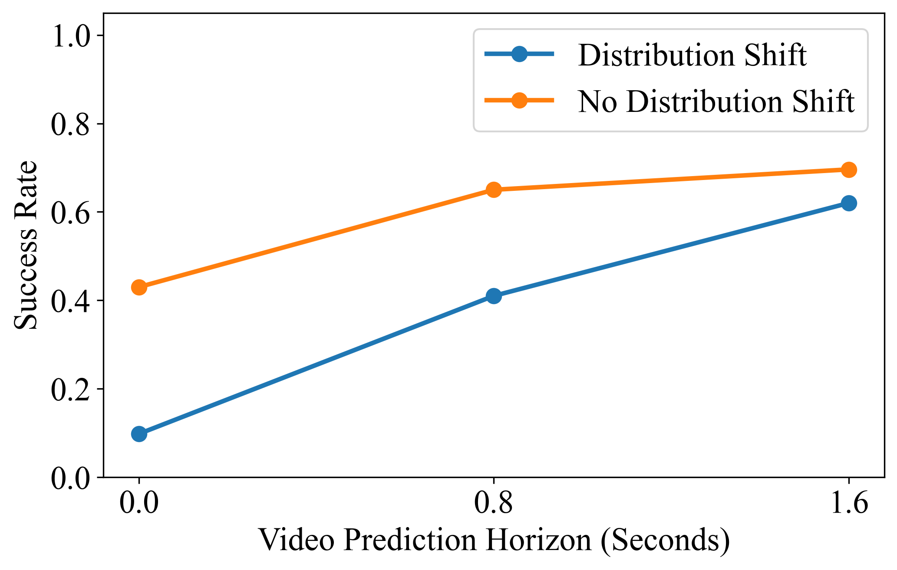
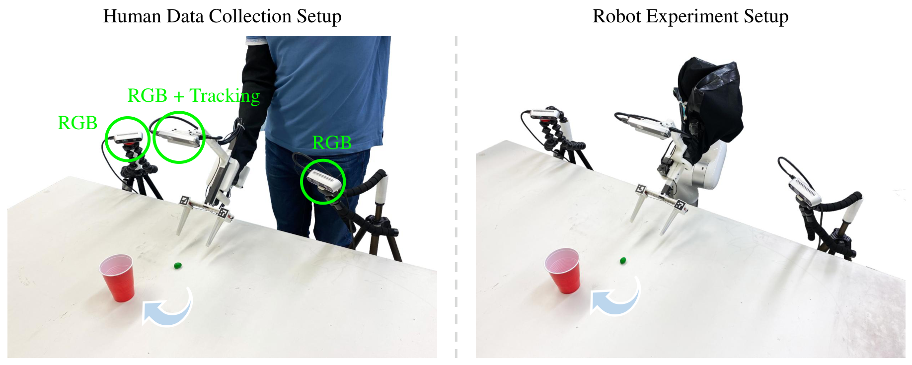

Video Generators are Robot Policies
1. Quick overview of the paper
| Reading positioning | content |
|---|---|
| What should the paper solve? | The current visuomotor policy is insufficiently generalized under shifts in perception or behavior distribution such as new objects, new backgrounds, and new tasks, and teaching real robot actions is expensive. The paper hopes to use the dynamic world prior learned in large-scale video generation models to reduce reliance on teaching data with action tags. |
| The author's approach | Let the video generation model first generate future multi-view videos of the robot completing the task, and then send the video U-Net intermediate layer features to the action U-Net to predict future robot actions. The key training choice is two-stage training: first adjust the video generation, then freeze the video U-Net training action head, and block the action loss from being passed back to the video network. |
| most important results | On RoboCasa, Video Policy uses 50 demos to achieve an average success rate of 0.63, which is higher than DP-VLA 0.57, GR00T 0.50, and UVA 0.50; it reaches 0.66 when using 300 demos. The average success rate on Libero10 is 0.94, which is higher than UVA 0.90 and $\pi_0$ 0.85. The ablation is 0.63 for two-stage training, 0.57 for joint training, and only 0.09 for the untuned video model. |
| Things to note when reading | Don't simply understand it as "the video model directly controls the robot". Actions are still output by a dedicated action diffusion head, and the video generation model mainly provides intermediate representations for future dynamics. Also note its high computational cost: the appendix gives about two weeks of training for 8 A100s, and a 25-frame video generation on the A100 takes about 9 seconds at a time. |
Core contribution list
- Propose the Video Policy framework: Transform Image-to-Video Stable Video Diffusion into a closed-loop robotic strategy to jointly generate future videos and actions.
- The system analyzes the relationship between video targets and action targets: Ablation shows that first learning to generate robot execution videos and then training the action decoding head is better than end-to-end joint training.
- Verify the value of action-free video: The video generation model can be trained on videos from all tasks, while the action head is trained on only half of the tasks and can still transfer to tasks where action supervision is not provided.
- Covering simulated and real robots: The experiments include RoboCasa, Libero10 and 5 real tasks. The real tasks test the generalization of object location, unseen objects and unseen backgrounds.

2. Background and problem setting
2.1 Core contradictions to be resolved
Robot behavior cloning can already work on many operating tasks, but a common weakness is distribution shift: the objects, backgrounds, locations, and task combinations seen during training are limited, and they may fail if they are slightly changed during testing. Computer vision and NLP can cover the long tail with larger data sets, but the collection cost of robot action teaching is high, especially real-world demonstrations are more expensive.
The author regards the video generation model as an exploitable intermediate resource: there are a large number of videos without action labels in the Internet and robot videos, which can help the model learn dynamic priors "from the current scene to the future task execution process". The problem of the paper is not to simply improve video quality, but to prove whether this kind of pixel-level future prediction can stably serve action generation.
2.2 Where did the previous game get stuck?
- Pure behavioral cloning: Directly from images to actions, strongly relies on demonstrations with action labels, and has limited generalization to new objects and new backgrounds.
- Use the video model as a world simulator: Future scenes can be generated, but if you rely on manual tracking or post-processing to turn videos into actions, your expressive capabilities are limited.
- Learn action decoder: If the action decoder takes on too much policy learning, it will be limited by the size of the action teaching data.
- Parallel work for joint video-action generation: The author believes that existing work lacks consistent benchmarks and detailed ablation, and it is difficult to judge whether success comes from video targets, action targets, or architectural details.
2.3 High-level ideas of this article
This article splits the strategy into two roles: the video generator $f$ is responsible for "imagining" the task execution process, and the action model $g$ is responsible for decoding the intermediate features of $f$ into robot actions. The author's core hypothesis is that as long as the video generation model can accurately synthesize future videos of the robot performing the task, then the action decoder can be smaller and mainly responsible for interface conversion, rather than relearning the complete task strategy.
3. Related work context
| Technical line | Positioning in the paper | Differences from this article |
|---|---|---|
| Behavior Cloning | Supervised learning actions from demonstrations. In recent years, diffusion policy has been commonly used to deal with multi-modal actions. | Instead of just encoding from vision to action, this paper explicitly trains a video diffusion model to predict future pixels and then decodes it using an action diffusion head. |
| Visual Pretraining for Policy Learning | Video prediction, contrastive learning, MAE, etc. are used to obtain more robust visual representations. | This paper takes video prediction as the proxy goal of policy learning, and verifies its effect through success rate, prediction horizon, and action-free video ablation. |
| Video Models for Decision-Making | Video generative models can be used for world simulation, long-range planning, or joint pixel-action generation. | This article emphasizes the systematic comparison of video/action training objectives within the same framework, and provides RoboCasa, Libero10, and real robot evaluations. |
4. Method details
4.1 Overall formalization
The input is an initial scene image $v_0$ and a language task description $c$. The model needs to output a segment of robot end motion $a_t \in \mathbb{R}^k$. The paper writes the strategy as:
Intuition: First generate a future execution video, and then read the action from the intermediate representation of the video generator.
$$ \{\hat v_t\}=f(v_0, c), \qquad \{a_t\}=g(\psi_0, \ldots, \psi_i), \quad \psi_i=f_i(v_0, c) $$Among them, $f$ is the video generator, $f_i$ represents the hidden features of the $i$ layer of the video generator; $g$ is the action decoding model. The key here is not the final pixels themselves, but the spatiotemporal features formed during the video generation process.
4.2 Architecture: Video U-Net + Action U-Net
The author is based on Image-to-Video Stable Video Diffusion. Video U-Net $\mu_\theta$ receives two types of conditions: one is the CLIP embedding $\phi(c)$ of the task text $c$, injected through cross-attention; the other is the latent $z_0=\mathrm{VAE}(v_0)$ of the input image $v_0$ obtained by SVD freezing VAE, and the latent of future noisy frames by channel Splicing.
The action end is a 1D CNN U-Net $\alpha_\theta$ adapted Diffusion Policy. In each denoising step $i$, hidden features are taken from the five layers of the video U-Net decoder. The paper gives the layer numbers as 9, 14, 17, 20, and 23; these spatiotemporal features are compressed into vector $h_i$ by the CNN adapter, which serves as the global conditioning of the action U-Net.
Rather than looking at the final video frame and then doing post-processing, action generation happens simultaneously with video generation at each denoising step.
$$ \{a_t\}=\alpha_\theta(a_i, i, h_i) $$$a_i$ is the noisy action, $i$ is the diffusion denoising step, and $h_i$ is the intermediate feature of video U-Net. This design makes the action head rely on the future dynamic representation being built by the video model.

4.3 Training objectives
In the training data $D=\{d_1, \ldots, d_n\}$, each demonstration contains video observation $\{v_t\}$, task text $c$ and action $\{a_t\}$. The video model training target is standard diffusion noise prediction:
$z_i$ is the noisy video latent, and $z_{i, 0}$ is the noisy latent embedding corresponding to the first frame. The goal is to let the video U-Net predict the noise $\epsilon$.
The action head is also trained with diffusion noise prediction. The author explicitly blocks the gradient backpropagation of $L_{\mathrm{action}}$ to the video U-Net $\mu_\theta$, allowing the video network to be primarily driven by the pixel future prediction goal.
4.4 Why is two-stage training important?
The paper compares joint training and 2-stage training. The two-stage version first uses the RoboCasa training set to fine-tune SVD for video generation, then freezes the video diffusion U-Net and trains the action denoising head. Experiments show that the average success rate of the two stages is 0.63, which is higher than 0.57 of joint; when the video model is not fine-tuned and only vanilla SVD features are used, it is only 0.09. This supports the author's explanation: the future video generation goal in pixel space is more general than the action generation goal, and the video model needs to first complete the task domain adaptation of "video of the robot executing the strategy".
5. Experiments and results
5.1 Experimental setup
The simulation experiment covers RoboCasa and Libero10, with a total of 34 operation tasks. Both benchmarks provide 50 human demonstrations for each task. RoboCasa follows the official protocol of evaluating 50 rollouts per task in 5 RoboCasa scenes; Libero10 follows the evaluation protocol used by UVA.
The action space is $a_i\in\mathbb{R}^7$, including a 6-DoF gripper pose and an opening and closing scalar. The input vision includes three cameras: gripper-mounted camera and left and right cameras. During training, each camera predicts 8 frames, for a total of 24 frames; in order to adapt to the 25-frame input format of SVD, a pad frame is added at the beginning of the sequence.
5.2 RoboCasa main results
| method | average task success rate | Remarks |
|---|---|---|
| 3DA | 0.06 | Explicit 3D characterization baseline |
| DP3 | 0.23 | 3D diffusion policy related baselines |
| DP-ResNet | 0.41 | This article reproduces the experiment, ImageNet pre-training ResNet |
| DP-CLIP | 0.43 | CLIP Visual Language Representation Variants |
| GR00T | 0.50 | Use 300 demos |
| FPV | 0.51 | Front view/3D-like strong baseline |
| DP-VLA | 0.57 | Automated demonstrations using 3000 MimicGen |
| UVA | 0.50 | Joint video action generation parallel work |
| Video Policy, 50 demos | 0.63 | The main model of this article, 50 demos/task |
| Video Policy, 300 demos | 0.66 | Further improvements after more MimicGen demonstrations |
The most interesting details to read are the Pick and Place tasks. The author pointed out that there is a significant shift in object location/category distribution between training and testing of this type of task, and Video Policy's improvement in this type of task is particularly obvious. For example, PnPStoveToCounter is 0.64 under 50 demos, and PnPSinkToCounter is 0.64, which is significantly higher than the 0.29 and 0.33 of GR00T 300 demos.
5.3 Libero10 Main Results
| model | DP-C | DP-T | OpenVLA | UniPi | $\pi_0$ | $\pi_0$-FAST | UVA | Ours |
|---|---|---|---|---|---|---|---|---|
| average success rate | 0.53 | 0.58 | 0.54 | 0.00 | 0.85 | 0.60 | 0.90 | 0.94 |
The appendix gives task-by-task results, with Video Policy averaging 0.94 across 10 Libero10 tasks, with 4 tasks at or near 1.00, and the lowest being 0.80 on the KITCHEN SCENE8 task.
5.4 Ablation: Are video targets useful?
| Variants | RoboCasa average success rate | explain |
|---|---|---|
| Joint | 0.57 | End-to-end joint training of video and action targets |
| 2-Stage | 0.63 | First train the video generation, then freeze the video U-Net training action head |
| No Video Tuning | 0.09 | Do not fine-tune SVD to robot execution videos, only train action heads |
| Half Tasks | 0.41 | The action head is only trained on half of the tasks, but the video model can watch all task videos |
| DP Half Tasks | 0.21 | ResNet Diffusion Policy is only trained on half of the tasks |
This table is the key to the argument chain of the paper. No Video Tuning's 0.09 shows that "directly taking pre-trained SVD features" is not enough; 2-Stage's 0.63 shows that the video model must first be adapted to the robot execution trajectory, and the action head is best used as a decoder on the frozen video representation.
5.5 Prediction horizon and action-free video
The authors fixed the action prediction to 1.6 seconds in the future and changed the video prediction horizon. The protocol used for horizon analysis in the appendix differs from standard RoboCasa: the authors sample the MimicGen environment to isolate distribution shift effects. The task-by-task table shows that the average 32-step video horizon is 0.67, 16-step is 0.55, and 0-step is 0.30; the difference is more obvious on distribution shift tasks such as pick-and-place.


5.6 Real robot results
The real experiment consists of 5 tasks: Open Drawer, Pick and Place, M&Ms to Cup, Upright Object, and Stack Cups. Each task collects 200 demonstrations and tests three categories of generalization: object position changes, unseen objects, and unseen backgrounds. The success rate is calculated using 10 rollouts for each condition.
| Task | Vary Object Location | Unseen Objects | Unseen Background |
|---|---|---|---|
| Open Drawer | 0.8 | 1.0 | 0.9 |
| Pick and Place | 1.0 | 0.9 | 0.8 |
| M&Ms to Cup | 0.8 | 0.9 | 0.2 |
| Upright Object | 0.3 | 0.7 | 0.8 |
| Stack Cups | 0.3 | 0.2 | 0.2 |
The failure of real experiments is also very informative. The authors explicitly point out that failures of Upright Object and Stack Cups often come from unrealistic video predictions, such as failing to generate correct upright placement, or generating gripper trajectories that cause cups to tip over. M&Ms to Cup dropped to 0.2 on the unseen background because the background color change affected the precise positioning of small objects.

6. Key points of reproducibility and implementation
6.1 Video model implementation
- Basic model: pre-trained Image-to-Video Stable Video Diffusion, generating a 25-frame video sequence.
- Multi-view coding: In RoboCasa, frame 1 is padded frame, frames 2-9 are gripper view, frames 10-17 are left camera, and frames 18-25 are right camera; the author modified the per-frame image embedding to represent the camera perspective.
- Action horizon: generates 8 frames per view by default and represents a 32-step prediction horizon; video subsamples at stride 4.
- Inference settings: 30 denoising steps, classifier-free guidance scale of 2.0; 256×256, 25 frames, 30 diffusion steps on A100, about 9 seconds.
6.2 Training hyperparameters
| model | resolution | learning rate | Batch | Steps | Precision |
|---|---|---|---|---|---|
| Joint Training | 256×256 | 1e-5 | 32 | 368866 | 16-mixed |
| 2-Stage Training | 256×256 | 1e-5 | 32 | 368866×2 | 16-mixed |
| No Video Tuning | 256×256 | 1e-5 | 32 | 368866 | 16-mixed |
| 2-Stage Libero10 | 256×256 | 1e-5 | 32 | 170000+140000 | 16-mixed |
| Real World | 256×192 → 448×320 | 1e-5 | 32 | 331500+92960 | 16-mixed |
6.3 Baseline reproducibility details
- UVA baseline: Initialize using the pre-trained VAE and MAR image generation model, modify it to three image conditional inputs, and generate a 256×256 video from three camera perspectives.
- Diffusion Policy baseline: Implemented using UMI, training two variants of ResNet18 and CLIP-Base; the task name is encoded with the same CLIP text encoder and spliced with image embedding to form a global context.
- DP baseline also uses three cameras to encode separately. The ResNet input is 256×256, the CLIP input is 224×224, the batch size is 768, 32 steps are predicted in the future, and 16 steps are rolled out in the simulation.
6.4 Real robot setup
Real demonstrations collected by humans using modified handheld grippers. The left and right side cameras are Intel RealSense D435, the gripper-mounted camera is a Basler fisheye camera; the gripper pose is tracked by a RealSense T265, the opening is estimated by an ArUco marker, and the clamping force is measured by a single-axis force sensor, all sensors running at 30 Hz.
The model inputs three-channel RGB images and predicts the relative gripper pose, relative gripper position and absolute grip force in the next 32 steps. When deployed, the robot uses impedance control to perform 24/32 of the steps. If the predicted gripping force is more than 300g higher than the actual measured value, the system will add a small gripper closing correction to prevent insufficient gripping force.

7. Analysis, Limitations and Boundaries
7.1 The most valuable part of this paper
The most valuable part is that it turns "whether video generation can be used as a policy learning agent target" into a testable engineering problem, rather than just giving a qualitative demonstration. The paper uses the same architecture to simultaneously compare joint, 2-stage, no video tuning, half tasks, and different video horizons, and concludes on the success rate: 2-stage is higher than joint, the non-tuned video model is almost invalid, long video horizon is better, and action-free videos can help unseen action supervision tasks. These ablations directly serve the core proposition.
7.2 Why the results hold up
- Multiple benchmarks: The simulation experiment covers RoboCasa and Libero10, with a total of 34 tasks, not just one or two demos.
- Strong comparison objects: RoboCasa neutralizes DP-ResNet, DP-CLIP, GR00T, DP-VLA, UVA, etc.; Libero10 neutralizes $\pi_0$, $\pi_0$-FAST, UVA, etc.
- Dissolve around causal chains: No Video Tuning 0.09 eliminates the explanation of "just taking SVD features is enough"; 2-Stage 0.63 is higher than Joint 0.57, supporting the design of "let the video target dominate the representation"; 32-step horizon 0.67 is higher than 16-step 0.55 and 0-step 0.30, indicating that the future dynamic prediction length is related to policy generalization.
- Real robot verification boundary: Real experiments not only show successful cases, but also give failed tasks and failure reasons. For example, Stack Cups and M&Ms to Cup failed under certain distribution shifts.
7.3 Limitations given by the author
- Scale boundaries: The authors acknowledge that the research is limited to limited-scale simulation benchmarks and a single real robot embodiment. A wider range of tasks, environments and robot morphologies still need to be verified.
- Model family boundaries: This article only explores Stable Video Diffusion, an example of a video generation model. Whether the conclusion is stable for other video model families requires wider testing.
- Calculate the cost: Video diffusion models are expensive to infer and train. The A100 training time and single video generation time in the appendix show that it is still far from real-time low-cost deployment.
- Inadequate prior knowledge of real physics: The failure of Upright Object and Stack Cups in real experiments has been attributed to unrealistic video predictions, indicating that SVD pre-training does not automatically have strong enough priors on real contact physics.
7.4 Applicable boundaries
Judging from the paper evidence, Video Policy is more suitable for operational tasks where the visual distribution shift is obvious, but the task can still be expressed through short-term future videos, such as pick-and-place, opening and closing doors, pressing buttons, etc. For scenarios that require extremely precise small object localization, strong contact physics, real-time response, or cross-embodiment migration, the paper's current evidence is weak.
7.5 Group meeting reading reminder
- When reading the method, pay attention to the technical meaning of the sentence "The video model is the policy": it does not output actions, but provides future dynamic representations on which action decoding depends.
- When reading the experiment, first look at Table 1, Table 3, Figure 3, and Figure 4, which correspond to the main results, training target ablation, prediction horizon, and action-free video respectively.
- Don't ignore computational costs and real failure cases when reading limitations. The claim of the paper is that video generation can significantly regularize policy learning, and it does not already solve real-time robot control.